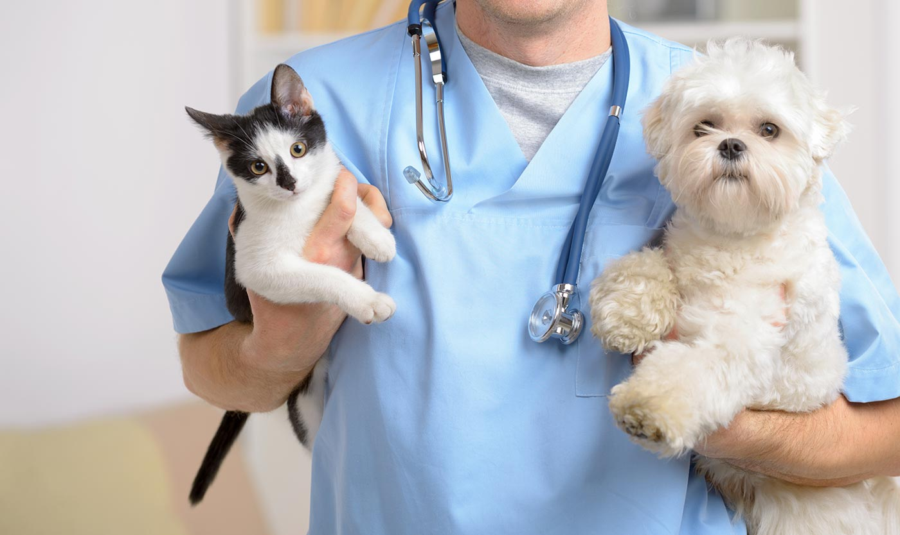
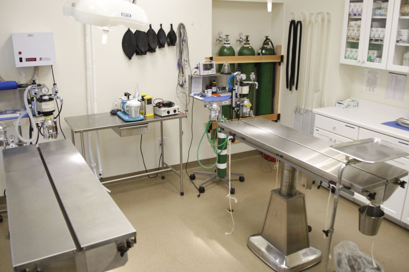

SERVICE
1 / 3

2 / 3

3 / 3

Best diagnostic medicine is dependent on a thorough examination and history. Our appointments average 30 minutes duration and we pride ourselves on our experience and diagnostic skills.
MEMBER SCHEME
Protect the health of your pets and keep them happy!
- Basic
- $ 1000 / year
- 1 time x Regular Check-ups
- 1 time x Vaccination
- 1 time x Parasite Prevention & Control
- 1 time x preventive teeth and gum care products
- Sign Up
- Pro
- $ 2000 / year
- 3 time x Regular Check-ups
- 3 time x Vaccination
- 3 time x Parasite Prevention & Control
- 3 time x preventive teeth and gum care products
- Sign Up
- Premium
- $ 3000 / year
- 5 time x Regular Check-ups
- 5 time x Vaccination
- 5 time x Parasite Prevention & Control
- 5 time x preventive teeth and gum care products
- Sign Up